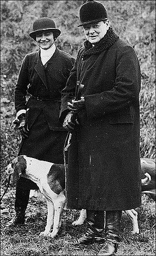
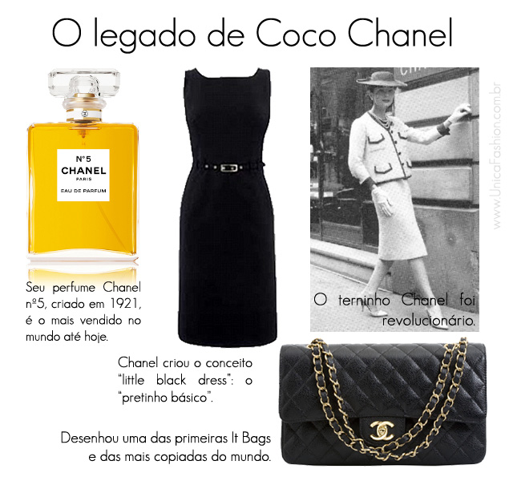
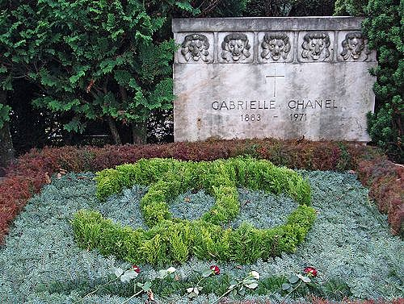

Biografia
Gabrielle Bonheur "Coco" Chanel. nascida em Saumur, na França foi uma estilista e empresária francesa. Fundadora da marca Chanel, ela foi creditada na era pós-Primeira Guerra Mundial por popularizar um chique esportivo e casual como o padrão feminino de estilo. Isso substituiu a "silhueta de espartilho" que era dominante de antemão com um estilo mais simples, muito menos demorado para colocar e remover, mais confortável e mais barato, tudo sem sacrificar a elegância. Ela é a única estilista listada na lista da revista Time das cem mais pessoas influentes do século XX. Uma prolífica criadora de moda, Chanel estendeu sua influência além das roupas de alta-costura, realizando seu design estético em joias, bolsas e fragrâncias. Seu perfume exclusivo, Chanel Nº 5, tornou-se um produto icônico.
A própria Chanel desenhou seu famoso monograma CC-intertravado, que está em uso desde a década de 1920. Sua casa de alta-costura fechou em 1939, com a eclosão da Segunda Guerra Mundial . Chanel ficou na França e foi criticada durante a guerra, por colaborar com os ocupantes nazistas-alemães e o regime fantoche de Vichy para impulsionar sua carreira profissional. Um dos contatos de Chanel foi com um diplomata alemão, o barão (Freiherr) Hans Günther von Dincklage
com que teve um relacionamentoApós a guerra, Chanel foi interrogada sobre seu relacionamento com Dincklage, mas não foi acusada como colaboradora devido à intervenção do primeiro-ministro britânico Winston Churchill. 
Quando a guerra terminou, Chanel mudou-se para a Suíça, retornando a Paris em 1954 para reviver sua casa de moda. Em 2011, Hal Vaughan publicou um livro sobre Chanel baseado em documentos recentemente desclassificados, revelando que ela havia colaborado diretamente com o serviço de inteligência nazista, o Sicherheitsdienst. Um plano no final de 1943 era que ela levasse uma abertura de paz da SS a Churchill para encerrar a guerra.
Legado na Moda
Chanel é uma marca desejada no mundo da moda e beleza. O logotipo com 'C' duplo
é conhecido mundialmente.
A famosa estilista francesa Coco Chanel mudou a história da moda feminina, marcou uma geração com
seu vestido
preto e o icônico perfume Chanel número 5.

Deixou um incrível legado de liberdade,
elegância e conforto. As inúmeras criações de Coco Chanel revolucionaram a moda e a vida das
mulheres de sua época,
com calças confortáveis, bijuterias, o pretinho básico e muito mais. Ousada, criativa e elegante,
podemos dizer que
esta estilista francesa criou a roupa de trabalho feminina do mundo contemporâneo.
A atual diretora criativa é Virginie Viard, que expressa sua preferência pela simplicidade e se
junta à diversão.
Em 1915, Harper's Bazaar delirou com os designs de Chanel: "A mulher que não tem pelo menos um
Chanel está desesperadamente fora de moda Nesta temporada, o nome Chanel está na boca de todos os
compradores.
A ascendência de Chanel foi o golpe mortal oficial para a silhueta feminina com espartilho.
Os enfeites, confusão e restrições suportadas por gerações anteriores de mulheres eram agora
ultrapassadas; sob sua influência — foram-se os "aigrettes, cabelos longos, saias curtas".
Sua estética de design redefiniu a mulher da moda na era pós-Primeira Guerra Mundial.
O visual da marca registrada da Chanel era de facilidade juvenil, fisicalidade liberada e confiança
esportiva desimpedida. A cultura do cavalo e o gosto pela caça tão apaixonadamente perseguidos pelas
elites,
especialmente a britânica, incendiaram a imaginação de Chanel. Sua própria indulgência entusiástica
na vida esportiva levou a designs de roupas informados por essas atividades. Das suas incursões
aquáticas
pelo mundo
do iatismo, ela se apropriou das roupas associadas às atividades náuticas: a camisa listrada
horizontal, a calça boca de sino, os suéteres de gola careca e as alpargatas – tudo tradicionalmente
usado por
marinheiros e pescadores.

O triunfo inicial de Chanel foi o uso inovador de jérsei, um material
tricotado à máquina fabricado para
ela pela empresa Rodier.Tradicionalmente relegado à fabricação de roupas íntimas e roupas
esportivas
(tênis, golfe e trajes de praia), o jérsei era considerado muito "comum" para ser usado em alta-costura
e não era apreciado
pelos designers porque a estrutura da malha o tornava difícil de manusear em comparação com os tecidos.
de jérsei de lã da Chanel consistia em uma jaqueta
cardigã
e saia plissada, combinada com um pulôver de cinto baixo.
Esse conjunto, usado com sapatos de salto baixo, tornou-se o visual casual em roupas femininas caras.
Seus ternos e vestidos de jérsei fluidos foram criados com essas noções em mente e permitiram
movimentos livres e fáceis.
Isso foi muito apreciado na época porque as mulheres trabalhavam para o esforço de
guerra como enfermeiras, funcionárias públicas e em fábricas. Seus trabalhos envolviam atividade física
e eles tinham que andar de trem, ônibus e bicicleta para chegar ao trabalho.Para tais circunstâncias,
eles desejavam roupas que não cedessem facilmente e pudessem ser vestidas sem a ajuda de servos.
Últimos Anos
De acordo com Edmonde
Charles-Roux
Chanel tornou-se tirânica e extremamente solitária no final da vida.
Em seus últimos anos, ela às vezes era acompanhada por Jacques Chazot e seu confidente Lilou Marquand.
Uma amiga fiel
também era a brasileira Aimée de Heeren, que morava em Paris quatro meses por ano no vizinho Hôtel
Meurice.
As ex-rivais compartilharam boas lembranças dos tempos com o duque de Westminster. Elas frequentemente
passeavam juntas pelo centro de Paris.
Morte
No início de 1971, Chanel tinha 87 anos, estava cansada e doente. Ela realizou sua rotina habitual de
preparação do catálogo de primavera. Ela havia saído para um longo passeio de carro na tarde de sábado,
9 de janeiro. Logo depois, sentindo-se mal, ela foi para a cama cedo.Ela anunciou suas palavras
finais para sua criada, que foram: "Veja, é assim que você morre. Ela morreu no domingo, 10 de janeiro
de 1971,
no Hotel Ritz, onde residia há mais de trinta anos. Seu funeral foi realizado na
Igreja de la Madeleine ;
suas modelos ocuparam os primeiros assentos durante a cerimônia e seu caixão foi coberto com flores
brancas
— camélias, gardênias, orquídeas, azáleas e algumas rosas vermelhas. Salvador Dalí, Serge Lifar, Jacques
Chazot,
Yves Saint Laurent e Marie-Hélène de Rothschild assistiram ao seu funeral na Igreja da Madalena. Seu
túmulo está
no Cemitério
Bois-de-Vaux, Lausana, Suíça.

A maior parte de seu patrimônio foi herdada por seu sobrinho
André Palasse, que morava na Suíça, e suas duas filhas, que moravam em Paris. Embora Chanel tenha sido
vista
como uma figura proeminente da moda de luxo durante sua vida, a influência de Chanel foi examinada
posteriormente após sua morte em 1971. Quando Chanel morreu, a primeira-dama da França, Mme Pompidou,
organizou um tributo ao herói. Logo, documentos prejudiciais das agências de inteligência francesas
foram
divulgados, descrevendo os envolvimentos de Chanel durante a guerra, encerrando rapidamente seus
monumentais
planos funerários.